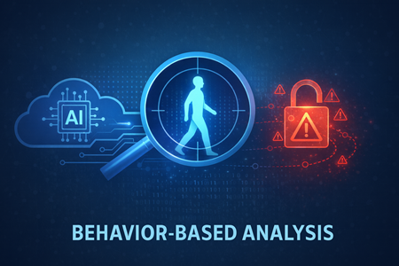
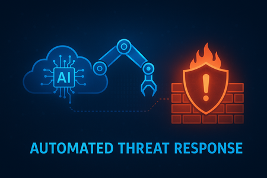

AI 기반 이상 탐지 시스템은 정상적인 행동 패턴을 학습하고, 이를 바탕으로 비정상적인 활동을 식별합니다. 이러한 시스템은 머신러닝 알고리즘을 활용하여 네트워크 트래픽, 사용자 행동, 시스템 로그 등을 분석하며, 알려지지 않은 위협도 탐지할 수 있는 능력을 갖추고 있습니다.g

행위 기반 분석은 사용자의 정상적인 행동 패턴을 학습하고, 이를 바탕으로 비정상적인 활동을 식별하는 기술입니다. AI는 대량의 데이터를 분석하여 미묘한 변화나 이상 징후를 감지할 수 있으며, 이를 통해 잠재적인 위협을 조기에 발견할 수 있습니다.
AI 기반 탐지 시스템은 위협을 실시간으로 식별하고, 자동으로 대응 조치를 취할 수 있습니다. 예를 들어, 의심스러운 활동이 감지되면 즉시 경고를 발송하거나, 해당 세션을 차단하는 등의 조치를 수행할 수 있습니다.